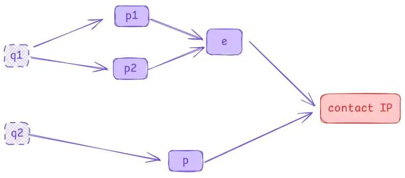

Try To Implement IPC
Intro: A taste of the Rust programming language
Recently, I tried to get started with Rust and wanted to write some code.
Most people’s first application is probably some kind of backend service (converting HTTP requests from the frontend into CRUD operations on a database and returning the results to the frontend).
However, I’ve never learned how to write backend services (I’ve been wanting to learn recently — if anyone has good zero-to-hero beginner resources, feel free to recommend them). So, I ended up picking up the two papers I’ve been studying lately (@Li2020IPC, @abd) to try reproducing them.
Note: This post only reproduces/discusses the IPC family of algorithms and does not address any performance optimizations, whether the algorithm is efficient, or why not to use some other algorithm.
Project repo: Github
Implicit Euler
Physical simulation is essentially a numerical integration process.
Explicit integration tends to explode, but implicit integration suffers from a “chicken-and-egg” problem (calculating the position at the next timestep requires knowing the velocity at the next timestep), making it impossible to solve explicitly. Instead, it requires solving a (possibly non-convex) optimization problem.
What can be implicitly integrated? A mass-spring system can. But honestly, I’ve never written an optimization-based implicit integrator before, so I decided to start by implementing a mass-spring system.
What Is It?
Incremental Potential (IP) is a function of the degrees of freedom (DOF) of a scene at time t, IP(t).
Implicit Euler constructs an then minimizes the IP (x(t+\Delta t) = \argmin_x E_{\text{IP}}(x(t))) to obtain the position at t+\Delta t.
Deep learning typically uses gradient descent (and its variants), but in graphics, empirical evidence suggests gradient descent performs poorly. So, we opt for Newton’s method.
Implementation
- Newton’s method is faster, but it introduces a problem: assembling the Hessian matrix.
- Fortunately, each component of the incremental potential is mostly a function of (k \cdot n DOFs), where n is the dimensionality (I implemented 2D), and k is a small number (at most a few dozen). Thus, for each small IP contributing to the larger IP, the Hessian has only tens to hundreds of entries, which can be stored sparsely and assembled into the full Hessian.
Following this tutorial, I implemented springs with vertices pinned to a wall.
- Choosing libraries:
- Used macroquad for GUI.
- Used nalgebra_glm for small-scale linear algebra.
- Initially planned to use nalgebra for large-scale linear algebra, but its sparse matrix functionality seemed incomplete, so I switched to faer.
- Initially used argmin for optimization.
A Small Detour Before Contact IP
Rust takes forever to compile, so configuring geometry shapes shouldn’t be hardcoded.
At first, I invented a weird file format and wrote a config based on my own logic:
!k 1000.0
!node
0.0 0.0
0.2 0.0
0.4 0.0
0.6 0.0
0.1 0.2
0.3 0.2
Then I asked an AI to write a parser for me.
Later, I realized that existing formats like JSON or TOML already have parsers, but by then, I was too lazy to change it.
Contact IP
In short, Contact IP:
- Requires that point-edge pairs (aka primitive pairs) from two different bodies, which are close enough (within a threshold \hat{d}), are assigned energy based on their distance.
But to prevent interpenetration, there are additional requirements:
- Optimization courses teach that (damped) Newton’s method iteratively approaches the optimum. Each iteration involves a line search, and to prevent interpenetration, every intermediate step of the line search must ensure no primitive pairs penetrate, ultimately guaranteeing no interpenetration in the final result.
Procedure
At each line search step in Newton’s method:
- Traverse all primitive pairs (or use some acceleration structure — I didn’t implement this) and identify those with distances below the threshold.
- Compute the energy, gradient, and Hessian of the Contact IP for each primitive pair’s DOFs, then solve d = -A^{-1}g to get the search direction.
- Perform a CCD (Continuous Collision Detection) operation to ensure the line search doesn’t cause interpenetration (by setting a maximum step length).
- Use the Armijo condition for the line search.
Repeat until sufficiently close to the minimum, at which point optimization is complete.
Implementation
Every step involved endless debugging…
Gradient & Hessian:
- In 2D, each primitive pair’s DOFs are (2 DOFs per point) × (3 points) = 6 DOFs.
- The gradient of energy E w.r.t. DOFs can still be computed manually (a 6D vector). But the Hessian is a 6×6 matrix, and the paper’s notation is a mess—sometimes dyadic product, sometimes Kronecker product, with no clear labeling in the text. Manual computation failed.
- So, I used SymPy for symbolic computation and generated code from it.
- The differentiation code can be found in the
symbolic/folder. - SymPy actually has Rust codegen, but it’s half-baked — often producing invalid Rust syntax, requiring string replacements, and only supporting single expressions (no vectors/matrices).
Note: Later, I built my own SymPy→Rust code generator:
Symars: Generate Rust code from SymPy expressions
- Remember: Point-to-segment distance requires case-by-case handling.
- CCD (ACCD) needs to be integrated into the optimization process, so argmin wasn’t suitable anymore. I discarded it and handwrote a damped Newton solver with ACCD and Armijo condition.
After days of coding and debugging, the demo finally worked:
- The constraints here are springs.
ABD
TL;DR, ABD Replaces traditional 6-DOF (translation + rotation) rigid bodies with 12-DOF bodies and heavily penalizes transformation matrices that deviate too far from rotation matrices, resulting in a (near-)rigid body simulation algorithm.
In 2D, an affine body (AB) has 6 DOFs: x = A x_0 + b, where the shape is defined by A (2×2) and b (2×1), assembled into a DOF vector: q = [flatten(A), b^T].
We know rotation matrices R satisfy R^T R = I. ABD uses an orthogonal potential energy \kappa \cdot \text{frobnorm}(A^T A - I) to penalize A and keep it close to a rotation matrix.
Implementation
- Any energy term requires second derivatives. Again, I used SymPy for differentiation.
- The project has thousands of lines of numerical computation code — don’t look at them.
- Affine bodies also need contact handling:
- Unlike mass-spring systems where each vertex is a DOF, an AB’s vertex position p is a function of DOFs, and the Contact IP is a function of p.
- A primitive pair involves two bodies, where one contributes an edge (two points p_1, p_2).
- Thus, derivatives must be taken w.r.t. both q s. The computational graph looks like this:

After more endless debugging and parameter tuning (mainly \kappa), the simulation finally ran:

Final Thoughts
The resulting code is a bona fide spaghetti monster.
Even though I spent a long time thinking about unifying interfaces before coding, the final design is neither OOP nor Rust-like, with inconsistent parameter passing everywhere.
I can’t help but wonder: Is my ability just too low, or is code complexity truly not something design alone can solve?
The bright side:
- Cargo is amazing — adding a dependency takes three seconds. Compared to
Cmake,xmakeor whatever-make, it’s night and day. - No memory issues (since I didn’t and did not need to write
unsafecode), so most effort went into logic.